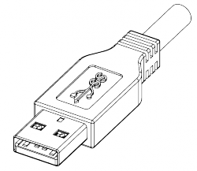

Un peu de culture générale
Vous connaissez tous le port USB pour la place qu'il tient en ce moment dans notre marché : même votre arrière grand-mère en a déjà entendu parler à la radio ou dans un magazine.
Et pour cause : il est universel.
Tout d'abord, le port USB a vu le jour en 1990 dans le but de remplacer tous les anciens ports qui commençaient à s'essouffler.
Ainsi, il a connu trois versions depuis sa création : la 1.1 la 2.0 et la 3.0.
La version 1.1 permet deux modes de fonctionnement :
low speed à 192 Ko/s pour les claviers et souris, etc.;
full speed à 1,5 Mo/s pour les imprimantes, scanners, etc.
La version 2.0 ajoute un nouveau mode : high speed, à 60 Mo/s. Il est utilisé par les disques durs externes, les clés USB de stockage, et par les nouveaux scanners et nouvelles imprimantes.
Mais ce n'est pas tout : l'USB 2.0 ajoute une alimentation en 5 Volts et jusqu'à 500 mA, soit 2,5 Watts (0,5 A * 5 V = 2,5 W).
En 2008, la version 3.0 de l'USB a vu le jour et apporte un débit de transfert de 625 Mo/s soit 5000 Mbits/s. Ce mode est alors nommé Superspeed.
Schéma électrique
Nous allons déjà voir le cas de l'USB 1.1 et 2.0 de plus près.
Alors, en 1 nous avons la borne +5V.
En 2, D-, qui permet de transférer les données.
En 3, D+, qui permet également de transférer les données.
En 4, Ground, c'est-à-dire le 0V.
Vous remarquerez qu'ici, le port USB est de type A.
Pourquoi de type A ? o_O
Ben, il existe aussi le type B :
Il existe encore les ports USB de type mini A et mini B. On les trouve le plus souvent pour connecter les appareils photos, certaines clés audio USB, etc.
Pourquoi y a-t-il deux broches D+ et D- pour transmettre les données (data) alors que c'est un port série ?
Le port USB utilise un type d'encodage (NRZI) qui nécessite deux broches.
C'est-à-dire que cet encodage utilise la borne D- pour représenter un 0 binaire, avec une tension négative, et la borne D+ pour le 1 binaire, avec une tension positive.
NRZI signifie Non Return to Zero Inverted : jamais de retour à zéro, inversé.
C'est un codage bien spécial :
s'il faut envoyer un "1"", la sortie ne change pas d'état ;
s'il faut envoyer un 0", la sortie change d'état à chaque fois.
.
Au bout de six "1" consécutifs, on envoie un "0".
Mais cette norme n'est utilisée à ma connaissance que pour l'USB.
Maintenant, passons à l'USB 3.0 : il est plus complexe puisqu'il comporte neuf fils !
En apparence, il reste similaire à l'USB 2.0, ce qui lui permet entre autres d'assurer une compatibilité descendante et ascendante : on peut brancher des vieux périphériques sur du nouveau matériel et des périphériques neufs sur du vieux matériel.
Mais, s'il conserve les quatre broches classiques de l'USB, cinq viennent s'ajouter permettant ainsi au mode Superspeed d'atteindre un très haut débit : 600 Mo/s tout de même ! :D
Voici les vues de dessus et de profil du connecteur (en coupe) :
Les broches 1, 2, 3 et 4 ont toujours les mêmes fonctions.
En 5 et 6, nous avons les contacts joliment nommés StdA_SSRX- et StdA_SSRX+ qui sont dédiés à la réception (pour l'ordinateur) en mode Superspeed.
En 8 et 9, ce sont les contacts StdA_SSTX- et StdA_SSTX+ qui servent à l'émission (pour l'ordinateur) en mode Superspeed.
Le contact 7 est quant à lui dédié au retour des signaux et se nomme GND_DRAIN.
Certes, les noms nous sont inutiles, mais cela nous apprend qu'il y a désormais une connectique pour la transmission et la réception dans la version 3.0 de l'USB.
Le protocole de communication
Initialisation
Tout d'abord, lorsque l'on branche un périphérique USB, l'ordinateur le détecte grâce à une tension, constante entre D- et D+ lorsque rien est branché, et qui chute dès que l'on branche quelque chose. Ainsi, dès que le périphérique est connecté, l'ordinateur envoie un courant d'initialisation pendant 10 millisecondes. Dès lors, il lui attribue l'adresse "0". Après, le PC questionne tous les périphériques USB déjà connectés pour connaître leur adresse, puis en attribue une non utilisée (codée sur 7 bits) au nouveau périphérique, ce qui laisse 127 possibilités !
Transfert des données
Les principes de l'USB, pour communiquer avec les périphériques, c'est que chacun a la parole à son tour, personne ne parle en même temps, et l'ordinateur indique au préalable qui doit parler.
Ainsi, le PC envoie ce qui s'appelle un jeton, qui contient l'adresse du périphérique qui doit parler. Ce jeton circule de périphérique en périphérique, jusqu'à ce que le périphérique se reconnaisse et écrive à l'intérieur. Le PC finit par recevoir le jeton et le décode.
Je vais faire une analogie avec des personnes qui veulent parler à quelqu'un d'autre.
Imaginez un chef qui décide de faire une ronde avec tous ses disciples. Chaque disciple est numéroté.
Le chef écrit un numéro derrière un morceau de papier et le fait passer à un premier disciple. Ce premier disciple regarde le numéro, ce n'est pas lui. Il passe au suivant, qui passera peut-être au troisième. Et ainsi de suite jusqu'à ce que la personne se reconnaisse dans le numéro. Si c'est le cas, cette personne écrit sur le bout de papier. Puis le passe à la suivante, qui ne regarde que le numéro, qui ne se reconnaîtra pas dans ce numéro, et qui donc passera le bout de papier au suivant, et ainsi de suite jusqu'à ce que le chef reçoive le bout de papier et le lise.
Bien évidemment, le chef peut très bien écrire quelque chose (une instruction, ou des données) et un numéro (adresse) au destinataire : la communication va dans les deux sens.
Ce système est appelé anneau à jeton ou "token ring". Vous vous en doutez, toute la communication est encodée en NRZI.
Au prochain chapitre, nous créerons un petit périphérique USB.

{kind=link}
{kind=link}
{kind=link}